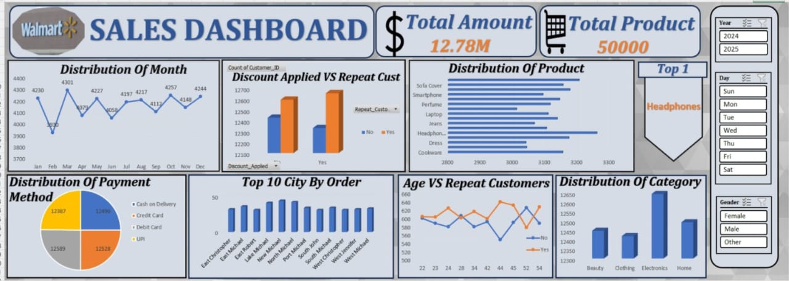

Projects
Walmart Sales Analysis Dashboard | Excel
Developed an interactive Excel-based sales dashboard to analyze large-scale transactional data and support business performance monitoring.
- Cleaned and structured 50,000+ sales records for analysis
- Analyzed revenue trends, customer behavior, and product performance
- Identified top-performing cities and products using pivot-based analysis
- Assessed the impact of discounts on sales volume and revenue
- Built dynamic dashboards using Pivot Tables, charts, and slicers
Tools: Microsoft Excel, Pivot Tables, Data Cleaning, Exploratory Data Analysis
Outcome: Enabled faster identification of sales trends and performance drivers through a single interactive reporting view.
View Project on GitHub⭐ Featured Project: AdventureWorks Sales Analysis | Power BI


Designed a multi-page Power BI dashboard to transform raw sales data into meaningful insights for business stakeholders.
- Built data models and relationships to support accurate reporting
- Created DAX measures for KPIs such as revenue, profit, and growth trends
- Developed interactive visuals to analyze product, region, and customer performance
- Implemented slicers and drill-downs for dynamic data exploration
- Ensured clarity and usability for non-technical stakeholders
Tools: Power BI, DAX, SQL, Data Modeling
Outcome: Provided a consolidated view of sales performance, enabling stakeholders to monitor KPIs and identify improvement areas.
View Project on GitHubLoan Management Data Analysis | SQL
Conducted SQL-based analysis on loan datasets to derive insights related to loan approvals, repayment behavior, and customer risk.
- Wrote complex SQL queries using joins, subqueries, and aggregations
- Analyzed loan approval rates and repayment patterns
- Identified high-risk customer segments based on repayment history
- Generated summary reports to support data-driven decision-making
Tools: SQL, MySQL
Outcome: Improved visibility into loan performance and customer risk factors through structured SQL reporting.
View Project on GitHub